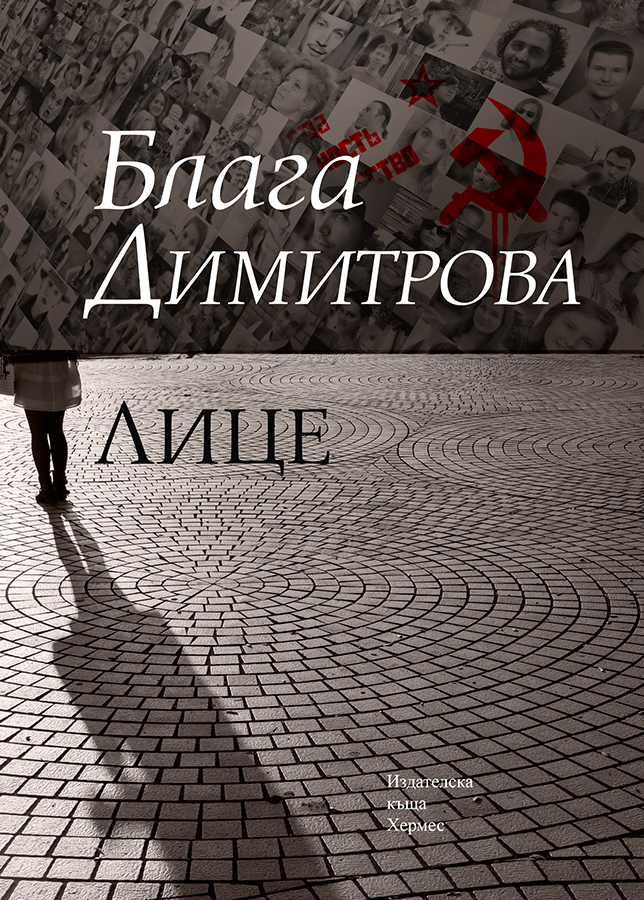

ЛЮБИМИТЕ НИ КНИГИ НА БЛАГА ДИМИТРОВА
Блага Димитрова е не само една от най-обичаните писателки сред читателите. Тя е и жена, на чиято сила, интелект и наследство се възхищаваме. Затова тя е автор на месеца в Библиотеката. Убедени сме, че ако все още не сте чели нищо нейно, то поне веднъж ви е хрумвала идеята да го направите. Или пък сте гледали „Лавина“ или „Отклонение“.
Тя е жена, която винаги ще ни впечатлява с проникновеността, откровението и безмерния си талант. И най-вече с начина, по който докосва съзнанието и душата на онези, които са я допуснали книгите ѝ до себе си. В случай, че все още се колебаете, ние ще ви препоръчаме няколко книги на Блага Димитрова, които със сигурност ще ви харесат.

"Лице"
Най-противоречивият роман на Блага Димитрова, чието първо издание успява да излезе, макар по-късно да е конфискуван от Държавна сигурност. Най-новото му издание е пълно и нецензурирано.
Преподавателката по марксизъм Бора Найденова прекарва свободното си време в провеждане на едно малко странно социологическо проучване. За да разбере нагласите на съвременното общество, тя задава въпроса „Какво цените най-много в живота?“. Получава различни отговори: някои – шаблонни, други – искрени. В процеса на работа тя среща Кирил, един от нейните изключени студенти. Двамата си приличат по тревожното им минало, свързано с налагането на комунизма. Но се разминават в позициите си спрямо идеологията му. Техните спорове разнищват теми като свободата, природата на човека, живота, човещината и истината.
"Лавина"
Един от най-въздействащите и емоционални романи на Димитрова, които могат да бъдат четени на няколко смислови нива.
От една страна като история на група алпинисти, тръгнали да изкачват връх по време на наистина тежки зимни условия. Но от друга „Лавина“ е метафора за бунта, за желанието да счупиш оковите на обществото, в което живееш и да тръгнеш срещу вятъра.
„Само сянката ти те придружава. Няма жива душа. Долу в ниското пада мъгла. За миг страх те съзема. Тишината е пълна с ослушване. Да се върнеш? То значи още повече да заглъбнеш в самотата.“